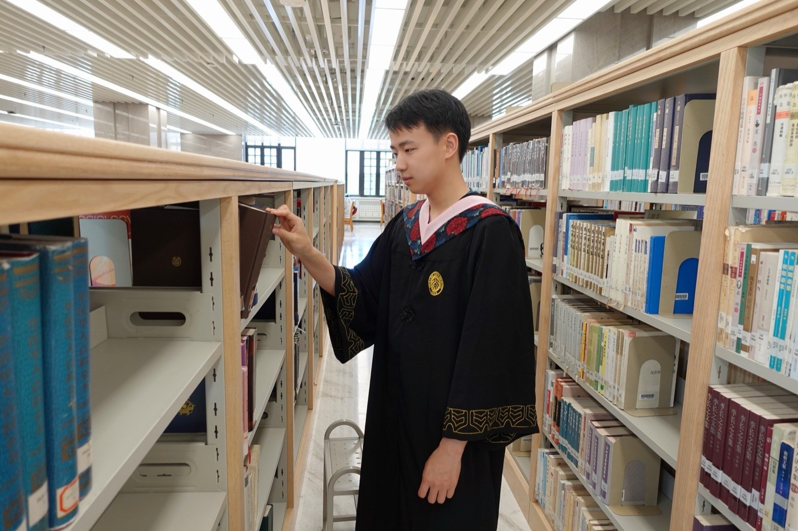
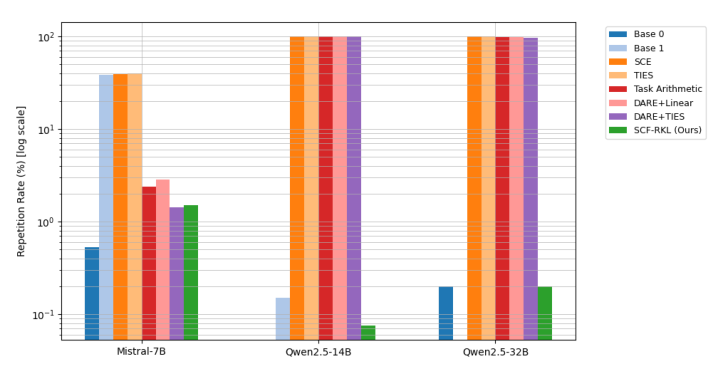
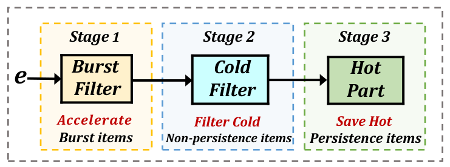
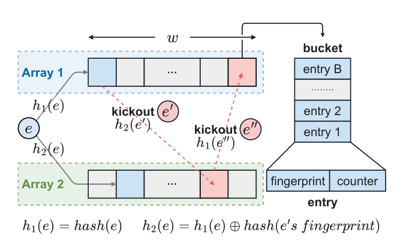

Tsinghua University
Ph.D. in Computer Science
I am a Ph.D. candidate in Computer Science at Tsinghua University. My research focuses on sketch-based network measurement and data stream mining.
I also work on large language models, with interests in efficient reasoning, model merging, and supervised fine-tuning. My AI-related research was conducted during my research internship at Qihoo 360 (August 2025–August 2026).
I received my B.Sc. in Computer Science from Peking University in 2023.

* Equal contribution. My name is shown in bold.
ACL · Industry Track, 2026
Retrieve and reuse reasoning skills to reduce redundant reasoning and improve accuracy.

arXiv preprint, 2026
Sparse, distribution-aware updates reduce functional interference during model merging.
arXiv preprint, 2026
Evaluating large language models on recent scientific Olympiad competitions.
KDD, 2025
A latching mechanism for accurate heavy-hitter detection in local and distributed data streams.

ICDE, 2025
Fast item separation improves the accuracy and throughput of persistence estimation.
ICDE, 2024
Bit-level counter adjustment makes sketches more memory-efficient while preserving fast updates.

IEEE/ACM ToN, 2023
Adaptive counters based on cuckoo hashing support accurate frequency and top-k estimation.
IEEE TKDE, 2026
The Web Conference (WWW), 2026
arXiv preprint, 2026
Updated April 2026; first posted in 2025.
arXiv preprint, 2026
KDD, 2025
KDD, 2025
IWQoS, 2025
IEEE BigData, 2025
CIKM, 2024
IEEE TPDS, 2023
ICPP, 2022
Ph.D. in Computer Science
B.Sc. in Computer Science
Research Intern · Large Language Models
Efficient reasoning, model merging, and supervised fine-tuning.
Teaching Assistant · Big Data and Machine Intelligence